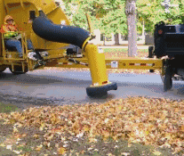
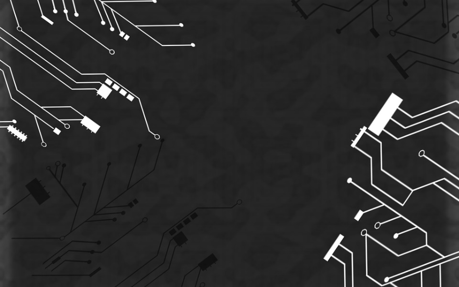

成果转化
自2008年毒奶粉事件以来，人们在使用本国产品的时候十分注重有无问题，而在使用“德国制造”的时候却放心得大胆使用。这是为什么呢？“德国制造”有着极高的质量和相当长的寿命。在这一点上“德国制造”就已经跑在世界的前列了。
真空吸叶器
例如，德国所有供3岁以下儿童食用的产品不得含有任何人工添加剂，必须是天然的；所有奶粉被列为药品监管；所有母婴产品只允许在药店出售，不允许在超市出售；德国锅具具有天然抗菌和耐高温性质，既能节能环保，导热效果又极佳，以至人们说，“使用这种德国锅具，一根蜡烛就能弄一顿美味佳肴。”
如此强大的“德国制造”是否是您心中的目标和想法呢？而在德国还有许许多多的科研成果有待转化。
本中心旨在促进中德合作，提供在成果转化方面的合作渠道。无论您是想寻求机械领域的成果，还是想寻求生物领域的成果，本中心都可为您寻求在德国的合作伙伴。更多详细内容请联系我们。